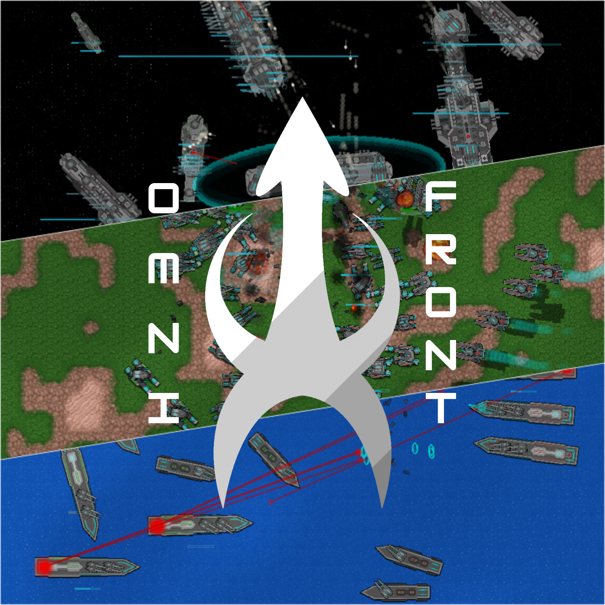

About Me
Greetings, i'm Snow, a loner, depressed and autistic person who loves to code, draw and annoy you. I enjoy experimenting with random ideas and finding new ways to learn.
I like to watch and play space or sci-fi related media.
Projects
OmniFront
A mod created around a sci-fi world available on the game; Rusted Warfare, currently a small project made by only one university student.
Below are download links currently available to the mod:
Pre-Alpha build (Deprecated, Supported)
Have issues, suggestions or looking to support the development? feel free to check out the server!
Contact
You may reach out to me whenever i'm online!
- Discord Server: Snow's Tavern